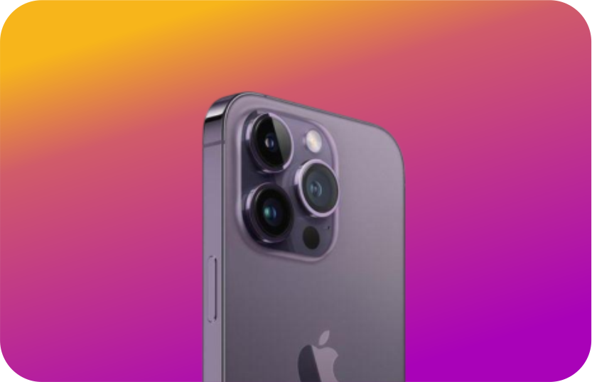

Asuper solution for yourbusiness!
Discover a smarter way to analyze your business data and make informed decisions with Swizz. Our innovative business analysis application provides you with the tools to transform raw data into actionable insights.

2K+
companies
8
languages
1.2m
leads
it justworks.
Swizz stands out as a leading business analysis application because of its robust features, user-friendly design, and commitment to customer satisfaction. When you choose Swizz, you're choosing a partner dedicated to your business's success.
Ridwan Abiodun
co. founder